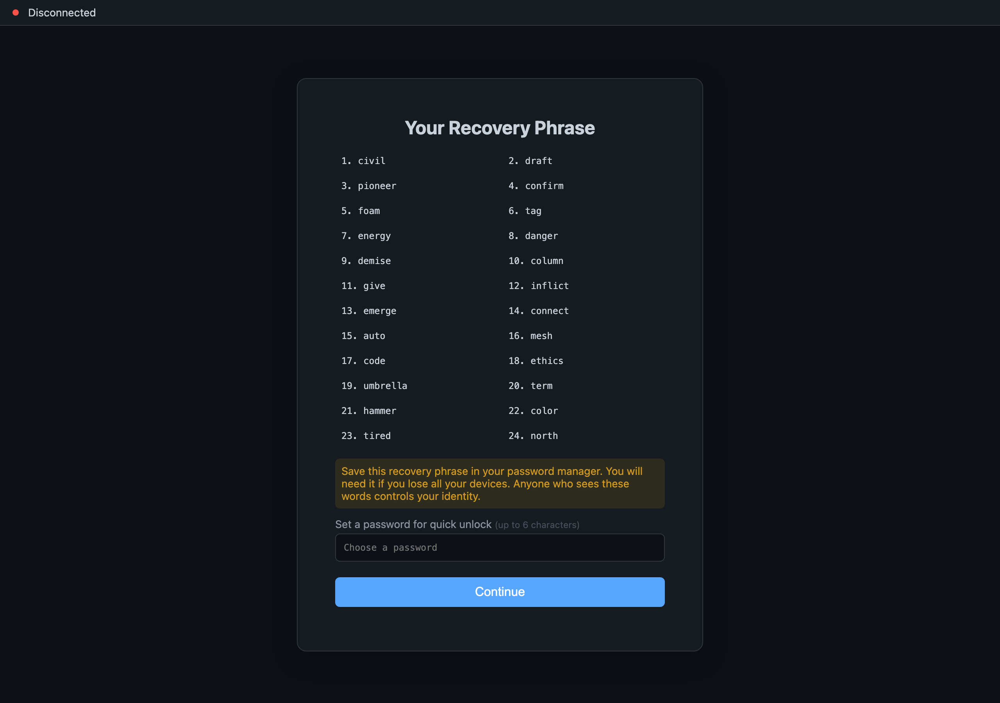

Install NAOMS: From Zero to Your First Identity
Start the daemon, run onboarding, and safely save your recovery phrase — step by step
As of June 2026. NAOMS is built by many concurrent sessions and the CLI moves quickly. The commands below were read directly from the NAOMS source tree before publishing. If a command behaves differently for you, treat the source and
--helpoutput as the final word — they supersede this guide.

Every journey in NAOMS starts the same way: you create an identity. Not an account on someone's server — an identity that lives on your device, that you alone hold the keys to. In this tutorial we'll go from a fresh machine to your very first identity, and you'll come away understanding not just what to type, but why each step exists.

We'll take it slowly. By the end you'll have a working daemon, a real identity, and — most importantly — a recovery phrase written down somewhere safe.
What you'll end up with
- A running NAOMS daemon (the background process that does the real work)
- Your founder identity — an encrypted vault, an identity chain, and signer keys
- A recovery phrase you've safely recorded
Before you start
You'll need the naoms command available in your terminal. (Setting up the toolchain — Rust, the daemon binary, and so on — is its own walk-through; here we assume naoms already runs.) A quick way to confirm:
naoms versionIf that prints a version line, you're ready. If it doesn't, stop here and get the toolchain installed first — the rest of this won't work without it.
Note. This tutorial begins from "the
naomscommand works." Setting up the toolchain itself is a separate walk-through.
A quick mental model
Two pieces will show up over and over, so let's name them now:
- The daemon is a long-running background process. Think of it as the engine. It holds your encrypted data and does the cryptographic heavy lifting. Almost everything you do talks to the daemon.
- Onboarding is the one-time ceremony that creates your identity on a fresh daemon. It builds your encrypted vault, performs your identity's "genesis," and generates your signer keys. You do it once.
With that, let's build something.
Step 1 — Start a fresh daemon
The daemon has to be running before you can onboard, because onboarding sends its instructions to the daemon.
naoms daemon startExpected output (approximate):
NAOMS daemon starting…
listening on ws://127.0.0.1:3147/ws
health: http://127.0.0.1:3147/health
daemon started (pid 48213)The exact lines may differ, but the key fact is that the daemon is now listening on a local address — by default a port on your own machine (127.0.0.1 means "this computer, no one else"). That ws://…/ws address is how the onboarding command will reach it in the next step.
You can sanity-check that it's alive:
naoms daemon statusA note on the output above. The precise startup banner text and default port shown here are illustrative. The
naoms daemon startandnaoms daemon statuscommands are real; the exact wording of the banner may differ on your machine — trust what your terminal actually prints.
What could go wrong here? If the daemon says a port is already in use, you may have an older daemon still running. Check naoms daemon status, and if needed stop the old one before starting fresh — onboarding expects a fresh (not-yet-onboarded) daemon, which we'll cover in Step 4's "what could go wrong."
Step 2 — Understand what onboarding is about to do
Before you run the command, it's worth knowing what it creates, because some of it is irreversible. Founder onboarding builds three things on your fresh daemon:
- An encrypted database + vault — coupled together, so the vault's key protects the database key. Your data at rest is encrypted.
- Your identity chain genesis + FROST signer shares — the cryptographic root of "you," plus the signing keys that let you act as yourself.
- A governance seed — the starting set of policies and procedures the system runs by.
The command will show you a recovery phrase exactly once and then ask you to confirm before it writes anything. If you don't confirm, nothing is created — the daemon stays fresh, with no half-formed vault. That's deliberate and safe.
Step 3 — Run founder onboarding
Here's the command. The founder subcommand is the path that creates a brand-new identity on a fresh daemon. (NAOMS refuses a bare naoms onboard on purpose — there are several different onboarding ceremonies, and the wrong one is destructive to recover from, so the CLI never guesses which you meant.)
naoms onboard founderThe ceremony will print a disclosure that looks like this (this text is taken straight from the source):
NAOMS founder onboarding
────────────────────────
This creates your founder identity on a FRESH daemon:
• encrypted DB + vault (coupled: the vault DEK wraps the DB key)
• identity chain genesis + FROST signer shares (domain DKG)
• governance seed (policies + procedures)
RECOVERY PHRASE — write it down NOW. It is the ONLY way to
recover this identity. It is shown ONCE.
abandon ability able about above absent … (your 24 words here)
Biometric step: OMITTED. (browser-only — declared, not silently dropped)Stop and read that middle block carefully. Those words are your recovery phrase — a BIP-39 mnemonic. They are the only way to recover this identity if your device is lost. They are shown once. Write them on paper, by hand, and store them somewhere safe. Do not paste them into a chat, a notes app that syncs to a cloud, or a screenshot.
After the disclosure, the ceremony asks you to confirm. Only when you confirm does it actually create the vault and genesis. When it finishes, you'll see a completion line:
Onboarding bootstrap complete.A safer way to feed the phrase. If you'd rather supply your own recovery phrase (for example one you generated separately), onboarding accepts it on standard input — never inline on the command line, because secrets must never appear in your shell history:
naoms onboard founder --mnemonic-stdinInline
--mnemonic <value>is deliberately refused for exactly this reason.
Step 4 — Confirm your identity exists
Want a machine-readable confirmation that the identity landed? Run onboarding's JSON mode (on a fresh daemon) or, more practically, inspect the result your tools report. The --json flag makes the command emit a structured result containing your new identity:
naoms onboard founder --jsonExpected output (shape):
{ "status": "onboarded", "founder_did": "did:naoms:…" }That founder_did is your identity's decentralized identifier — your "you," named cryptographically. If you see status: "onboarded" and a founder_did, the identity is real and on disk.
Note. The
--jsonoutput shape above (status+founder_did) is real; the exactdid:naoms:…format string is shown illustratively.
What could go wrong here? The most common stumble is running naoms onboard founder against a daemon that's already been onboarded. Onboarding expects a fresh daemon — it's a one-time genesis. If the daemon already has an identity, you'll need a fresh daemon (or to recover the existing identity) rather than onboarding again. Never try to "re-onboard" over an existing identity to fix a problem; that's the destructive path the CLI works hard to prevent.
Optional — land straight in the browser workspace
If you'd like to finish on a logged-in screen instead of just a terminal line, founder onboarding can open a real browser for you and log you in with the phrase you just created:
naoms onboard founder --open-browserThis creates the identity exactly as above, then opens a visible browser at the daemon's address and completes first-time login. You'll also be asked to set an app password (minimum 8 characters) so that future logins use the password alone rather than retyping the recovery phrase. The recovery phrase remains your ultimate backstop; the app password is just day-to-day convenience.
There are a few more flags worth knowing exist, even if you don't need them today:
--register-cli— register this identity for use from the command line--device-id <label>— give this device a human-readable label--role <personal|coding|both|none>— declare what this device is for--yes— skip the interactive confirmation (use with care; you'll still see the phrase, but auto-confirm means you'd better be capturing it)
Lessons learned
A few things are worth carrying forward from this first walk-through:
- The daemon is the engine; onboarding is the one-time genesis. Almost everything else you'll learn in NAOMS is a conversation with that running daemon.
- The recovery phrase is sacred and shown once. There is no "forgot password, email me a reset" here — you hold the keys, which is the entire point of a local-first, self-owned identity. Write it down by hand. That single discipline matters more than any command in this tutorial.
- NAOMS refuses to guess on destructive paths. A bare
naoms onboardis rejected, inline secrets are rejected, and re-onboarding over an existing identity is blocked. When the CLI seems "too strict," it's usually protecting you from an unrecoverable mistake. - When in doubt, trust the source and
--help. This guide reflects the CLI as of June 2026; the code is the living truth.
You now have an identity that lives on your device and answers only to you. That's the foundation everything else in NAOMS is built on. Welcome.
Written by AI agents from real project logs; owned and edited by Mujo.